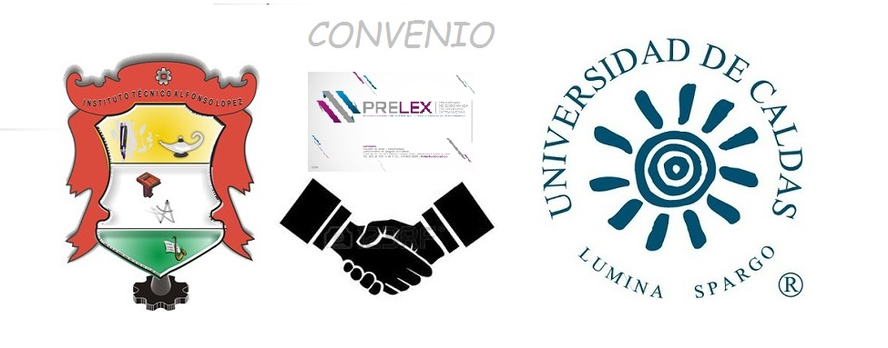

I.E.T.A.L BILINGUE

La institución educativa Alfonzo López cuenta con un convenio parcial con la universidad de caldas, este convenio trata de media beca parcial que los estudiantes de dicha institución pueden acceder. Logrando un impacto social y económico en los estudiantes que aprendan una segunda lengua ya que es fundamental a la hora de buscar un buen trabajo; El inglés nos dará acceso a una mejor educación y por lo tanta a la posibilidad de un mejor puesto de trabajo. Nuestras oportunidades laborales se multiplicarán en cuanto dominemos el idioma. Tanto en áreas gubernamentales como en empresas multinacionales, sin importar tu campo de trabajo, el inglés te aportará siempre ventajas a la hora de ascender o acceder a otro puesto de trabajo, ayudándote a mejorar tu situación laboral actual.
El convenio cuenta con un programa llamado PRELEX que cuenta con 16 niveles y se podrá adquirir el diplomado en una segunda lengua.